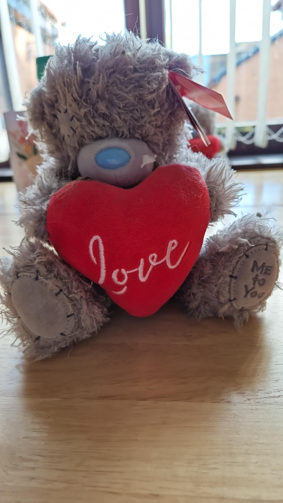

Pauline Gordon - Website Designer and Developer
Within my many job roles i have always been a team player. Good communication is always needed when your working in retail to make sure things run smoothly.
When change in shift happens you need to keep other collegues informed in what had happened during your shift so they can continue with tasks and make sure customers had everything they needed on shelves and cleanliness of store/bar.
When working with others its paramount that you are polite, attentive, good at decision making with good problem solving. Attention to detail is always needed no matter what industry you work in. Having things neat and tidy and where it should, makes everything easier for everyone.

The purpose of the teamworking project was to allow us to work collaboratively within a group to plan, design, implement, test, and evaluate a computing project..
We had to produce a project in response to a project brief. The project had to be completed by a project team working together, but with each of us having defined areas of responsibility.
The project allowed us the opportunity to demonstrate the knowledge and skills we have accumulated across the academic year. It also gave us the opportunity to further develop key skills in planning, decision making, working with others, communications, implementation, problem solving, time management, testing and evaluation.
